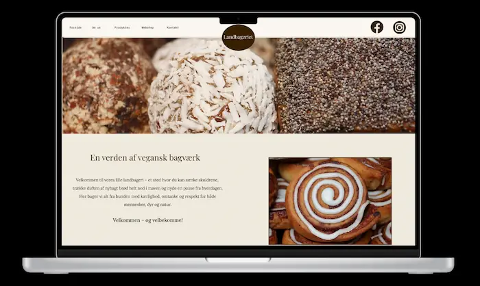
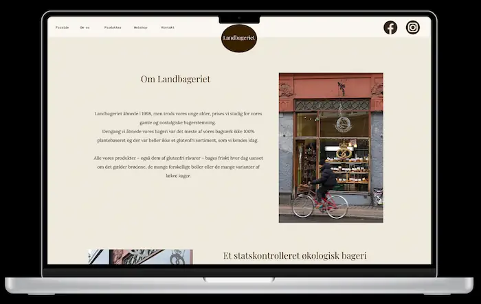
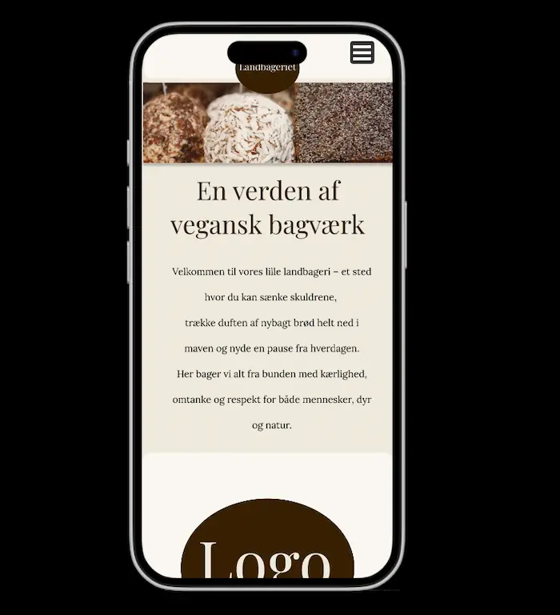
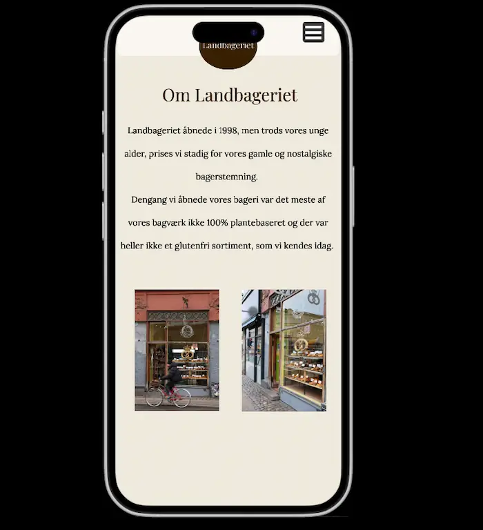

Tema 5 - Grundlæggende indhold
Virksomheds site
Løsning, process, og læring
I dette tema arbejdede vi i grupper med at redesigne en virksomheds eksisterende website fra bunden. Opgaven bestod i at analysere styrker og svagheder ved den nuværende hjemmeside og derefter idegenerere en forbedret og mere gennemtænkt version af sitet, samtidig med at virksomhedens behov og kerneværdier blev overført til vores løsning. Til dette formål udarbejdede vi prototyper, mockups, styletiles og moodboards for at undersøge, hvordan sitet kunne redesignes med fokus på brugervenlighed, klar kommunikation og virksomhedens mål. Prototypen blev anvendt til brugertests med forskellige testmetoder, og den indsamlede feedback blev løbende integreret for at optimere brugeroplevelsen. Derudover producerede vi selv indhold til hjemmesiden i form af fotos, animationer og tekst, som blev nøje planlagt for at sikre, at virksomhedens værdier og præferencer blev formidlet korrekt. Arbejdet blev eksekveret i fællesskab i gruppen, så alle bidrog aktivt til det endelige produkt. Under processen arbejdede vi efter Scrum-metoden for at sikre effektiv kommunikation og struktur i gruppen. Til opgavestyring og overblik anvendte vi Trello, hvilket hjalp os med at bevare den røde tråd og sikre, at alle arbejdede målrettet mod samme mål. Samlet set gav opgaven mig værdifuld indsigt i samarbejde og teamarbejde – både i forbindelse med møder og gennem brugen af værktøjer som Figma, Trello og GitHub-teams. Ud over det fik vi også læring indenfor animationer i aftereffects, og brugen af lottiefiles til implementering af animationer på hjemmesider. Jeg har opnået kompetencer i at udvikle en virksomheds hjemmeside fra bunden, samtidig med at der tages hensyn til både kundens, virksomhedens og brugernes behov.
Galleri



